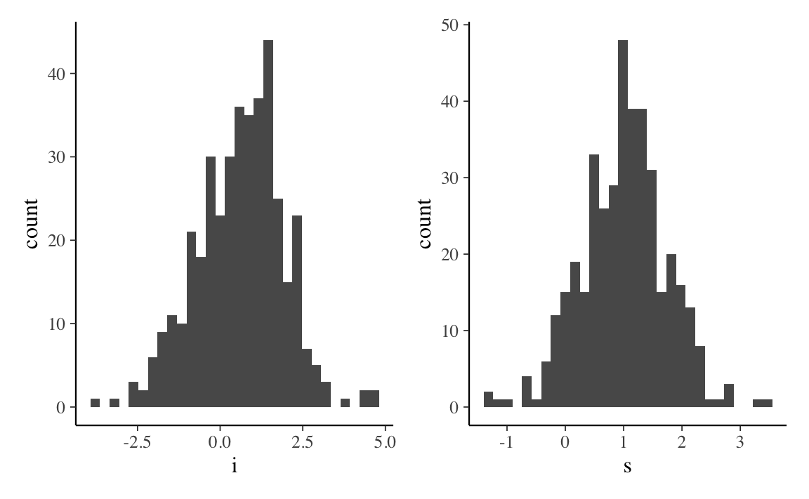
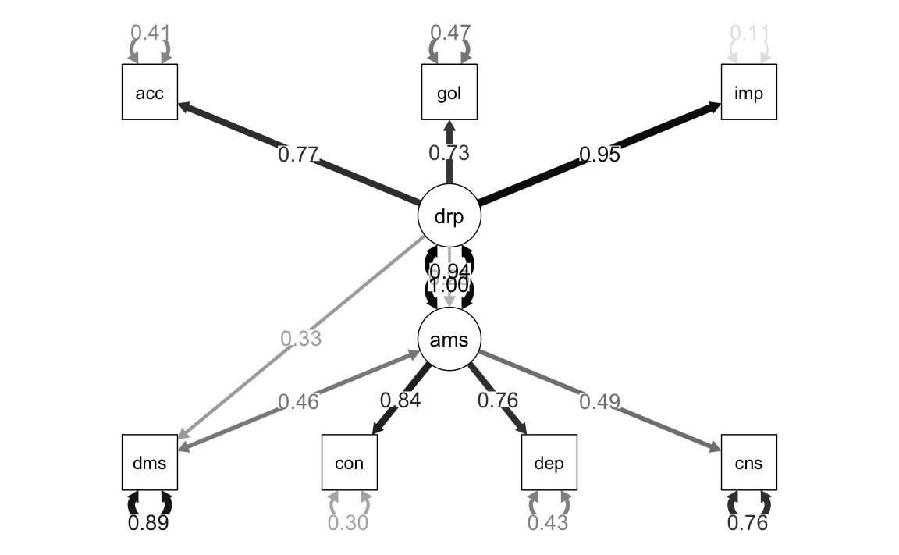

17.7 Oltre la regressione multipla
In generale, lo psicologo ha a che fare con diagrammi di percorso nei quali sono presenti variabili non osservabili (latenti) e quindi l’approccio della regressione multipla non può essere applicato. È necessario invece descrivere il diagramma di percorso mediante un insieme di equazioni strutturali, definendo un numero di equazioni almeno altrettanto grande quanto il numero delle incognite. Tale soluzione viene solitamente fornita da un software. Consideriamo di seguito alcuni esempi in cui vengono applicate le regole di Wright per diagrammi di percorso che non possono essere descritti nei termini di un modello di regressione multipla. Un esempio di path diagram che non si riduce al modello di regressione multipla è quello fornito nella Figura 17.1.
La path analysis è anche usata in quel campo della psicologia interessato alla misurazione dei costrutti psicologici quali i tratti della personalità, le capacità cognitive e i disturbi psicopatologici. Questa è la ragione per cui la discutiamo qui.
Esercizio 17.3 In questo primo esempio, l’analisi dei percorsi verrà utilizzata per testare un modello a priori che si basa sul quadro teorico della Self Determination Theory (SDT; Deci & Ryan, 2000), una delle principali teorie della motivazione umana. Questo modello concettuale applicherà la SDT per esaminare i principali determinanti psicologici e comportamentali dei sintomi bulimici in un campione di giovani donne adulte. Più specificamente, esamineremo come l’appagamento (soddisfazione) e l’esaurimento (frustrazione) delle risorse psicologiche essenziali, o bisogni psicologici (ad esempio, per l’autonomia, la competenza e la relazionalità), possono prevedere in modo differenziale i sintomi bulimici nelle donne attraverso due mediatori chiave, l’approvazione degli ideali culturali sulla magrezza e inflessibilità delle opinioni sul proprio corpo. Secondo la SDT, i bisogni psicologici influenzano la capacità di un individuo di autoregolarsi e far fronte alle richieste della vita quotidiana e possono rendere gli individui vulnerabili al malessere psicologico se i bisogni psicologici vengono frustrati (Vansteenkiste & Ryan, 2013). La frustrazione dei bisogni può essere psicologicamente più depauperante della mancanza di soddisfazione dei bisogni.
Gli individui i cui bisogni vengono frustrati possono impegnarsi in attività malsane e comportamenti compensatori al fine di riconquistare una soddisfazione dei bisogni a breve termine. La frustrazione dei bisogni rende gli individui più vulnerabili agli ideali culturali, in quanto le risorse personali per rifiutare questi ideali sono esaurite (Pelletier & Dion, 2007).
Il modello che verrà testato propone che le donne i cui bisogni psicologici sono frustrati avalleranno ideali sociali più problematici sulla magrezza rispetto alle donne i cui bisogni psicologici sono soddisfatti. La frustrazione dei bisogni sarà anche predittiva dell’inflessibilità degli schemi corporei, poiché è stato dimostrato che la frustrazione dei bisogni porta a disturbi dell’immagine corporea e a comportamenti alimentari patologici (Boone, Vansteenkiste, Soenens, Van der Kaap-Deeder e Verstuyf, 2014). Il modello propone inoltre che una maggiore approvazione degli ideali culturali sulla sarà predittiva di una maggiore inflessibilità sugli schemi corporei che, di per sé, è predittiva dei sintomi bulimici.
Il campione include 192 partecipanti, in maggioranza donne, di età media 21.2 anni (SD = 6.89). Sono stati somministrati i seguenti strumenti:
- Body Image-Acceptance and Action Questionnaire (Sandoz, Wilson, Merwin, & Kellum, 2013), per misurare l’inflessibilità relativa alla propria immagine corporea,
- Endorsement of Society’s Beliefs Related to Thinness and Obesity (Boyer, 1991), per valutare l’internalizzazione degli ideali di magrezza,
- Basic Psychological Needs Satisfaction and Frustration Scale (Chen et al., 2015), per misurare la soddisfazione e la frustrazione dei bisogni, . Eating Disorders Inventory-2 – Bulimic Symptomology Subscale (Garner, 1991), per misurare i sintomi bulimici.
I dati sono i seguenti.
# BFLX – Body Inflexibility,
# END – Endorsement of Societal Beliefs about Thinness and Obesity,
# MNS – Mean Need Satisfaction,
# MNF – Mean Need Frustration,
# BULS – Bulimic Symptoms
dat_cov <- lavaan::getCov(
upper,
lower = FALSE,
names = c("BFLX", "END", "MNS", "MNF", "BULS")
)Un primo modello di mediazione considera BFLX quale variabile endogena, MNF quale variable esogena e END quale mediatore. Usando Mplus, Barbeau, Boileau, Sarr & Smith (2019) trovano i seguenti coefficienti di percorso: \(a\) = 0.37, \(b\) = =.29, e \(c\) = 0.34.
Svolgiamo l’analisi con lavaan. Definiamo il modello.
mod <- "
# direct effect
BFLX ~ c*MNF
# mediator
BFLX ~ b*END
END ~ a*MNF
# indirect effect (a*b)
ab := a*b
# total effect
total := c + (a*b)
"Adattiamo il modello ai dati.
Esaminiamo i risultati
summary(fit, fit.measures = TRUE, standardized = TRUE, rsquare = TRUE)
#> lavaan 0.6.15 ended normally after 1 iteration
#>
#> Estimator ML
#> Optimization method NLMINB
#> Number of model parameters 5
#>
#> Number of observations 192
#>
#> Model Test User Model:
#>
#> Test statistic 0.000
#> Degrees of freedom 0
#>
#> Model Test Baseline Model:
#>
#> Test statistic 125.849
#> Degrees of freedom 3
#> P-value 0.000
#>
#> User Model versus Baseline Model:
#>
#> Comparative Fit Index (CFI) 1.000
#> Tucker-Lewis Index (TLI) 1.000
#>
#> Loglikelihood and Information Criteria:
#>
#> Loglikelihood user model (H0) -480.945
#> Loglikelihood unrestricted model (H1) -480.945
#>
#> Akaike (AIC) 971.890
#> Bayesian (BIC) 988.178
#> Sample-size adjusted Bayesian (SABIC) 972.339
#>
#> Root Mean Square Error of Approximation:
#>
#> RMSEA 0.000
#> 90 Percent confidence interval - lower 0.000
#> 90 Percent confidence interval - upper 0.000
#> P-value H_0: RMSEA <= 0.050 NA
#> P-value H_0: RMSEA >= 0.080 NA
#>
#> Standardized Root Mean Square Residual:
#>
#> SRMR 0.000
#>
#> Parameter Estimates:
#>
#> Standard errors Standard
#> Information Expected
#> Information saturated (h1) model Structured
#>
#> Regressions:
#> Estimate Std.Err z-value P(>|z|) Std.lv Std.all
#> BFLX ~
#> MNF (c) 0.441 0.065 6.769 0.000 0.441 0.441
#> END (b) 0.241 0.065 3.702 0.000 0.241 0.241
#> END ~
#> MNF (a) 0.450 0.064 6.982 0.000 0.450 0.450
#>
#> Variances:
#> Estimate Std.Err z-value P(>|z|) Std.lv Std.all
#> .BFLX 0.648 0.066 9.798 0.000 0.648 0.651
#> .END 0.793 0.081 9.798 0.000 0.793 0.797
#>
#> R-Square:
#> Estimate
#> BFLX 0.349
#> END 0.203
#>
#> Defined Parameters:
#> Estimate Std.Err z-value P(>|z|) Std.lv Std.all
#> ab 0.109 0.033 3.271 0.001 0.109 0.109
#> total 0.550 0.060 9.125 0.000 0.550 0.550Generiamo un diagramma di percorso.

I coefficienti di percorso sono simili, ma non identici, a quelli trovati con Mplus.
L’effetto diretto di MNF (Need Frustration) su BFLX (Body Inflexibility) è uguale a 0.44. Ma l’effetto totale è \(0.44 + 0.45*0.24 = 0.55\). L’effetto di mediazione è uguale a \(0.45*0.24 = 0.109\). L’outout di lavaan fornisce anche gli errori standard e il test che tali effetti siano uguali a zero.
Le correlazioni tra le variabili sono esprimibili nei termini dei coefficienti di percorso. Per esempio la correlazionetra BFLX e MNF è
La correlazione tra BFLX e END è
L’output di lavaan fornisce anche la porzione di varianza che viene spiegata dalle variabili esogene per le due variabili endogene nel modello.
Per esempio, la varianza spiegata di END è
come riportato dall’output di lavaan.
Esercizio 17.4 Continuiamo con l’esempio precedente, discusso da Barbeau, Boileau, Sarr & Smith (2019) e esaminiamo ora un modello di path analisi più complesso (Fig. 4 di Barbeau et al., 2019). Usando la sintassi di lavaan, il modello diventa
# BFLX – Body Inflexibility,
# END – Endorsement of Societal Beliefs about Thinness and Obesity,
# MNS – Mean Need Satisfaction,
# MNF – Mean Need Frustration,
# BULS – Bulimic Symptoms
mod <- "
BULS ~ MNF + BFLX
BFLX ~ END + MNF
END ~ MNS + MNF
"Adattiamo il modello ai dati.
Esaminiamo la soluzione ottenuta.
summary(fit, fit.measures = TRUE, standardized = TRUE, rsquare = TRUE)
#> lavaan 0.6.15 ended normally after 1 iteration
#>
#> Estimator ML
#> Optimization method NLMINB
#> Number of model parameters 9
#>
#> Number of observations 192
#>
#> Model Test User Model:
#>
#> Test statistic 8.229
#> Degrees of freedom 3
#> P-value (Chi-square) 0.042
#>
#> Model Test Baseline Model:
#>
#> Test statistic 239.501
#> Degrees of freedom 9
#> P-value 0.000
#>
#> User Model versus Baseline Model:
#>
#> Comparative Fit Index (CFI) 0.977
#> Tucker-Lewis Index (TLI) 0.932
#>
#> Loglikelihood and Information Criteria:
#>
#> Loglikelihood user model (H0) -700.169
#> Loglikelihood unrestricted model (H1) -696.054
#>
#> Akaike (AIC) 1418.338
#> Bayesian (BIC) 1447.655
#> Sample-size adjusted Bayesian (SABIC) 1419.146
#>
#> Root Mean Square Error of Approximation:
#>
#> RMSEA 0.095
#> 90 Percent confidence interval - lower 0.017
#> 90 Percent confidence interval - upper 0.176
#> P-value H_0: RMSEA <= 0.050 0.130
#> P-value H_0: RMSEA >= 0.080 0.696
#>
#> Standardized Root Mean Square Residual:
#>
#> SRMR 0.035
#>
#> Parameter Estimates:
#>
#> Standard errors Standard
#> Information Expected
#> Information saturated (h1) model Structured
#>
#> Regressions:
#> Estimate Std.Err z-value P(>|z|) Std.lv Std.all
#> BULS ~
#> MNF 0.177 0.066 2.688 0.007 0.177 0.177
#> BFLX 0.533 0.066 8.085 0.000 0.533 0.533
#> BFLX ~
#> END 0.241 0.065 3.702 0.000 0.241 0.241
#> MNF 0.441 0.065 6.769 0.000 0.441 0.441
#> END ~
#> MNS -0.102 0.091 -1.116 0.264 -0.102 -0.102
#> MNF 0.378 0.091 4.140 0.000 0.378 0.378
#>
#> Variances:
#> Estimate Std.Err z-value P(>|z|) Std.lv Std.all
#> .BULS 0.578 0.059 9.798 0.000 0.578 0.581
#> .BFLX 0.648 0.066 9.798 0.000 0.648 0.651
#> .END 0.788 0.080 9.798 0.000 0.788 0.792
#>
#> R-Square:
#> Estimate
#> BULS 0.419
#> BFLX 0.349
#> END 0.208Generiamo il diagramma di percorso.

Anche in questo caso i coefficienti di percorso sono simili, ma non identici, a quelli riportati da Barbeau et al. (2019). Gli autori riportano una varianza spiegata di END pari a 0.209; con lavaan si ottiene 0.208. Per BFLX gli autori riportano 0.292; lavaan ottiene 0.349. Per BULS gli autori riportano 0.478; con lavaan si ottiene 0.419.
Esercizio 17.5 Weiss, Forkus, Contractor, e Schick (2018) esaminano con una path analisi la relazione tra la difficiltà di regolare le emozioni positive e l’abuso di alcol e di sostanze.
- La difficoltà di regolare le emozioni positive viene misurata con la Difficulties in Emotion Regulation Scale – Positive (DERS-P; Weiss, Gratz, & Lavender, 2015), che comprende le sottoscale di Acceptance, Impulse, e Goals.
- L’abuso di sostanze viene misurato con la Drug Abuse Screening Test (DAST; Skinner, 1982).
- L’abuso di alcol viene misurato con la Alcohol Use Disorder Identification Test (AUDIT; Saunders, Aasland, Babor, De la Fuente, & Grant, 1993), con le sottoscale di Hazardous Consumption, Dependence, e Consequences.
I dati di un campione di 284 partecipanti sono riportati nella forma di una matrice di correlazione.
lower <- "
1
.38 1
.41 .64 1
.34 .44 .30 1
.29 .12 .27 .06 1
.29 .22 .20 .17 .54 1
.30 .15 .23 .09 .73 .69 1
"dat_cov <- lavaan::getCov(
lower,
names = c("dmis", "con", "dep", "consu", "acc", "goal", "imp")
)
dat_cov
#> dmis con dep consu acc goal imp
#> dmis 1.00 0.38 0.41 0.34 0.29 0.29 0.30
#> con 0.38 1.00 0.64 0.44 0.12 0.22 0.15
#> dep 0.41 0.64 1.00 0.30 0.27 0.20 0.23
#> consu 0.34 0.44 0.30 1.00 0.06 0.17 0.09
#> acc 0.29 0.12 0.27 0.06 1.00 0.54 0.73
#> goal 0.29 0.22 0.20 0.17 0.54 1.00 0.69
#> imp 0.30 0.15 0.23 0.09 0.73 0.69 1.00I dati vengono analizzati con due modelli di path analysis. Nel primo modello si ipotizza che la difficoltà di regolare le emozioni positive sia una variabile esogena che influenza sia l’abuso di sostanze sia l’abuso di alcol. Si ipotizza inoltre che abuso di sostanze e abuso di alcol siano correlate.
La difficoltà di regolare le emozioni positive è indicata da drpe; l’abuso di alcolo è denotato da amis; l’abuso di sostanze è denotato da dmis.
mod <- "
drpe =~ NA*acc + goal + imp
amis =~ NA*con + dep + consu
amis ~ drpe
dmis ~ drpe
dmis ~~ amis
drpe ~~ 1*drpe
amis ~~ 1*amis
"Svolgiamo l’analisi statistica con sem().
Esaminiamo i risultati.
summary(fit, fit.measures = TRUE, standardized = TRUE, rsquare = TRUE)
#> lavaan 0.6.15 ended normally after 18 iterations
#>
#> Estimator ML
#> Optimization method NLMINB
#> Number of model parameters 16
#>
#> Number of observations 284
#>
#> Model Test User Model:
#>
#> Test statistic 38.211
#> Degrees of freedom 12
#> P-value (Chi-square) 0.000
#>
#> Model Test Baseline Model:
#>
#> Test statistic 741.324
#> Degrees of freedom 21
#> P-value 0.000
#>
#> User Model versus Baseline Model:
#>
#> Comparative Fit Index (CFI) 0.964
#> Tucker-Lewis Index (TLI) 0.936
#>
#> Loglikelihood and Information Criteria:
#>
#> Loglikelihood user model (H0) -2465.787
#> Loglikelihood unrestricted model (H1) -2446.682
#>
#> Akaike (AIC) 4963.574
#> Bayesian (BIC) 5021.958
#> Sample-size adjusted Bayesian (SABIC) 4971.221
#>
#> Root Mean Square Error of Approximation:
#>
#> RMSEA 0.088
#> 90 Percent confidence interval - lower 0.057
#> 90 Percent confidence interval - upper 0.120
#> P-value H_0: RMSEA <= 0.050 0.023
#> P-value H_0: RMSEA >= 0.080 0.688
#>
#> Standardized Root Mean Square Residual:
#>
#> SRMR 0.046
#>
#> Parameter Estimates:
#>
#> Standard errors Standard
#> Information Expected
#> Information saturated (h1) model Structured
#>
#> Latent Variables:
#> Estimate Std.Err z-value P(>|z|) Std.lv Std.all
#> drpe =~
#> acc 0.769 0.053 14.440 0.000 0.769 0.770
#> goal 0.727 0.054 13.473 0.000 0.727 0.728
#> imp 0.943 0.050 18.956 0.000 0.943 0.945
#> amis =~
#> con 0.808 0.058 13.855 0.000 0.835 0.837
#> dep 0.730 0.058 12.607 0.000 0.755 0.756
#> consu 0.477 0.060 7.973 0.000 0.493 0.494
#>
#> Regressions:
#> Estimate Std.Err z-value P(>|z|) Std.lv Std.all
#> amis ~
#> drpe 0.263 0.073 3.614 0.000 0.254 0.254
#> dmis ~
#> drpe 0.333 0.060 5.534 0.000 0.333 0.334
#>
#> Covariances:
#> Estimate Std.Err z-value P(>|z|) Std.lv Std.all
#> .amis ~~
#> .dmis 0.431 0.060 7.216 0.000 0.431 0.458
#>
#> Variances:
#> Estimate Std.Err z-value P(>|z|) Std.lv Std.all
#> drpe 1.000 1.000 1.000
#> .amis 1.000 0.936 0.936
#> .acc 0.406 0.045 9.020 0.000 0.406 0.407
#> .goal 0.468 0.047 9.876 0.000 0.468 0.470
#> .imp 0.106 0.045 2.385 0.017 0.106 0.107
#> .con 0.299 0.064 4.690 0.000 0.299 0.300
#> .dep 0.427 0.060 7.072 0.000 0.427 0.428
#> .consu 0.753 0.069 10.979 0.000 0.753 0.756
#> .dmis 0.886 0.075 11.771 0.000 0.886 0.889
#>
#> R-Square:
#> Estimate
#> amis 0.064
#> acc 0.593
#> goal 0.530
#> imp 0.893
#> con 0.700
#> dep 0.572
#> consu 0.244
#> dmis 0.111Creiamo un path diagram.

Gli autori esplorano un modello alternativo nel quale le relazioni causali vengono rovesciate: in questo caso è la difficoltà di regolazione delle emozioni positive ad essere la variabile esogena, e l’abuso di sostanze e l’abuso di alcol sono le variabili esogene.
mod_alt <- "
drpe =~ NA*acc + goal + imp
amis =~ NA*con + dep + consu
drpe ~ amis + dmis
dmis ~~ amis
drpe ~~ 1*drpe
amis ~~ 1*amis
"Adattiamo il modello ai dati.
Esaminiamo i risultati.
summary(fit_alt, fit.measures = TRUE, standardized = TRUE, rsquare = TRUE)
#> lavaan 0.6.15 ended normally after 19 iterations
#>
#> Estimator ML
#> Optimization method NLMINB
#> Number of model parameters 16
#>
#> Number of observations 311
#>
#> Model Test User Model:
#>
#> Test statistic 41.844
#> Degrees of freedom 12
#> P-value (Chi-square) 0.000
#>
#> Model Test Baseline Model:
#>
#> Test statistic 811.802
#> Degrees of freedom 21
#> P-value 0.000
#>
#> User Model versus Baseline Model:
#>
#> Comparative Fit Index (CFI) 0.962
#> Tucker-Lewis Index (TLI) 0.934
#>
#> Loglikelihood and Information Criteria:
#>
#> Loglikelihood user model (H0) -2700.544
#> Loglikelihood unrestricted model (H1) -2679.623
#>
#> Akaike (AIC) 5433.089
#> Bayesian (BIC) 5492.925
#> Sample-size adjusted Bayesian (SABIC) 5442.179
#>
#> Root Mean Square Error of Approximation:
#>
#> RMSEA 0.089
#> 90 Percent confidence interval - lower 0.061
#> 90 Percent confidence interval - upper 0.120
#> P-value H_0: RMSEA <= 0.050 0.014
#> P-value H_0: RMSEA >= 0.080 0.727
#>
#> Standardized Root Mean Square Residual:
#>
#> SRMR 0.046
#>
#> Parameter Estimates:
#>
#> Standard errors Standard
#> Information Expected
#> Information saturated (h1) model Structured
#>
#> Latent Variables:
#> Estimate Std.Err z-value P(>|z|) Std.lv Std.all
#> drpe =~
#> acc 0.721 0.048 15.117 0.000 0.769 0.770
#> goal 0.682 0.048 14.097 0.000 0.727 0.728
#> imp 0.885 0.046 19.287 0.000 0.944 0.945
#> amis =~
#> con 0.835 0.057 14.742 0.000 0.835 0.837
#> dep 0.755 0.057 13.273 0.000 0.755 0.756
#> consu 0.494 0.059 8.366 0.000 0.494 0.494
#>
#> Regressions:
#> Estimate Std.Err z-value P(>|z|) Std.lv Std.all
#> drpe ~
#> amis 0.123 0.080 1.532 0.125 0.115 0.115
#> dmis 0.294 0.073 4.030 0.000 0.276 0.276
#>
#> Covariances:
#> Estimate Std.Err z-value P(>|z|) Std.lv Std.all
#> amis ~~
#> dmis 0.502 0.059 8.521 0.000 0.502 0.503
#>
#> Variances:
#> Estimate Std.Err z-value P(>|z|) Std.lv Std.all
#> .drpe 1.000 0.879 0.879
#> amis 1.000 1.000 1.000
#> .acc 0.406 0.043 9.439 0.000 0.406 0.407
#> .goal 0.468 0.045 10.335 0.000 0.468 0.470
#> .imp 0.106 0.043 2.496 0.013 0.106 0.107
#> .con 0.299 0.061 4.908 0.000 0.299 0.300
#> .dep 0.427 0.058 7.401 0.000 0.427 0.428
#> .consu 0.753 0.066 11.489 0.000 0.753 0.756
#> dmis 0.997 0.080 12.470 0.000 0.997 1.000
#>
#> R-Square:
#> Estimate
#> drpe 0.121
#> acc 0.593
#> goal 0.530
#> imp 0.893
#> con 0.700
#> dep 0.572
#> consu 0.244Creiamo il diagramma di percorso.

In entrambi i casi i risultati replicano quanto riportato dagli autori.